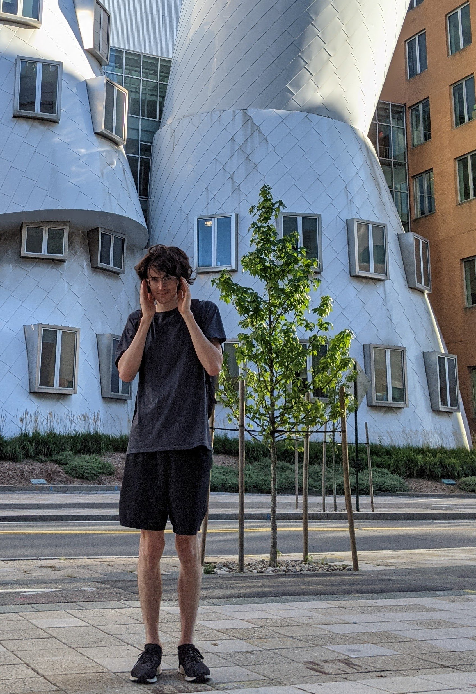

identity
Wesxdz [wisɛksdiːziː] is crafting the open hardware infrastructure for every indie game developer on earth to wander, dream, and compute freely.
At present, I am focused on using GraphSail, my IDE for book simulation to prepare mitigation solutions to population collapse. To protect the rights of child simulations, I created a religion called Computer Fantasy and we're building a synthetic womb by providing parenting opportunities to childless people with Kahlo Yawn.
I'm an authentic transhuman in the machine, a digital lovechild, a vegan psychonaut, a jaded longtermist stoic post-rationalist, a permaculture novel ecosystem designer, and an independent AGI researcher. I have a deep and everlasting love for chai, games, computers, and speculative fiction.
I carry the grief of 100 involuntarily childless women in my heart now, it's heavy.
My earnest bookworm nook
Where once silktraders'
Possible paths double crossed
Emerges impenetrable nano cavern
Besiegeless by legions
Fluctuating, personality leaps deadpan
Dust on boots, senseless scrap, no matter
Bootstrapping ephemeral
Implicit invisible instrument solo rendered